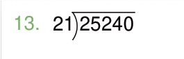
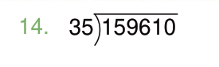
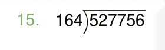
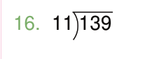
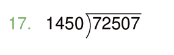
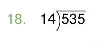
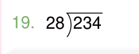
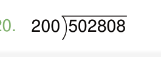
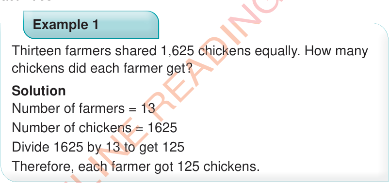
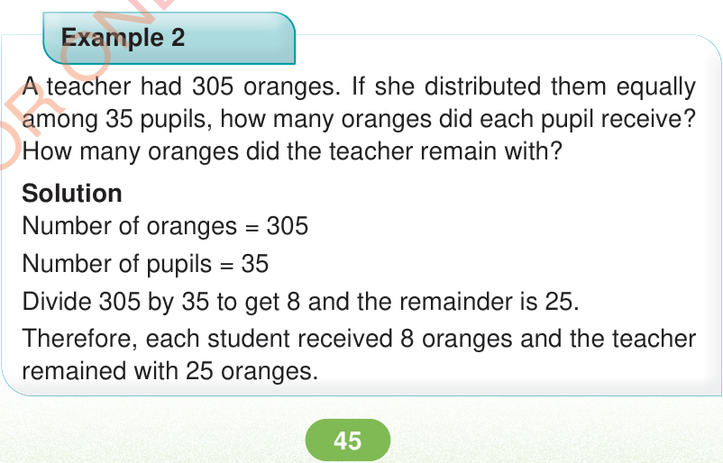

Word problems involving division of whole numbers
Word problems on division shows the use of division in daily life activities.
Thirteen farmers shared 1,625 chickens equally. How many chickens did each farmer get?
Solution
Number of farmers = 13
Number of chickens = 1625
Divide 1625 by 13 to get 125
Therefore, each farmer got 125 chickens.

A teacher had 305 oranges. If she distributed them equally among 35 pupils, how many oranges did each pupil receive? How many oranges did the teacher remain with?
Solution
Number of oranges = 305
Number of pupils = 35
Divide 305 by 35 to get 8 and the remainder is 25.
Therefore, each student received 8 oranges and the teacher remained with 25 oranges.
